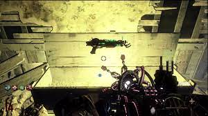
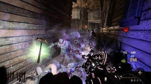

Black ops 2.wiki
Home
Campaign
Multiplayer
Zombies
Wonder Weapons

Black ops 2 features the return of several wonder weapons,
while also bringing in new ones. There is a large selection of weapons
for players to use against the undead, but they must spend their points
wisely, or risk losing to the horde of zombies.
